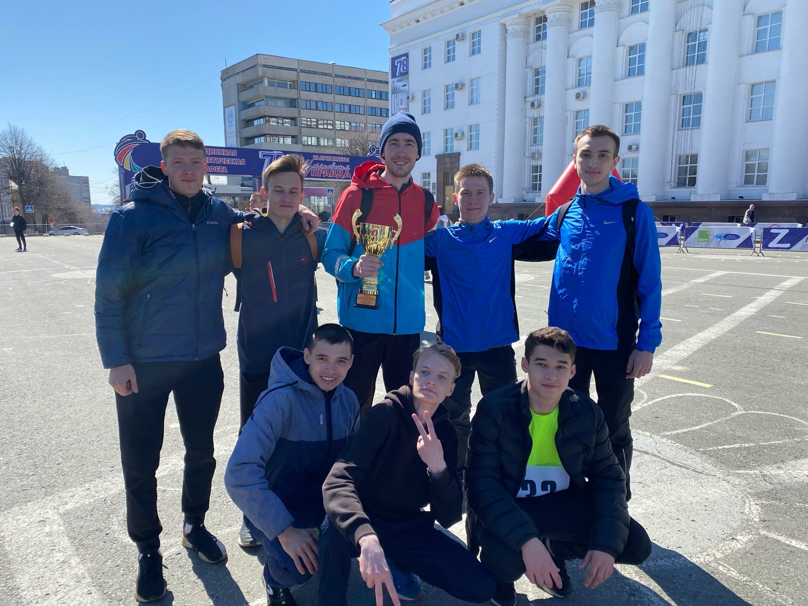

Таиров Эмиль ИВТАПбд-12
Почта для связи: tairov.19@bk.ru
 Футбольные достижения: Победитель чемпионата города среди юношей 2003 года , Победитель чемпионата города среди юношей 2002 года ,
Победитель кубка города среди юношей 2002-2003 года , 3-е место на чемпионате России среди юношей 2003 года рождения , участник Первенства МФС приволжье среди мужских команд.
Футбольные достижения: Победитель чемпионата города среди юношей 2003 года , Победитель чемпионата города среди юношей 2002 года ,
Победитель кубка города среди юношей 2002-2003 года , 3-е место на чемпионате России среди юношей 2003 года рождения , участник Первенства МФС приволжье среди мужских команд.
Прочие: 3-е место в областной эстафете за УлГТУ , закончил музыкальную школу по классу фортепиано,Призер инженерной олимпиады «Звезда»
